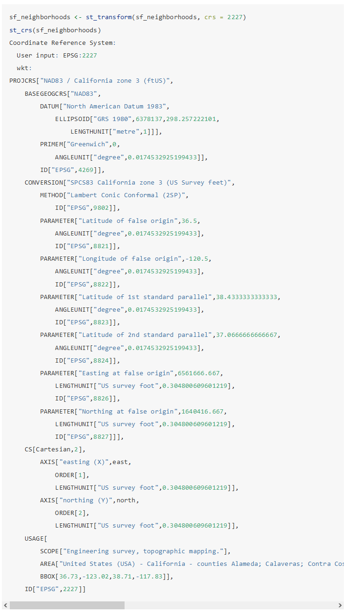
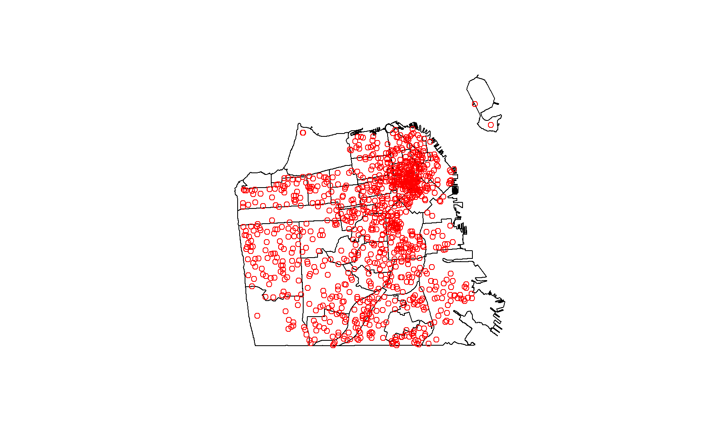
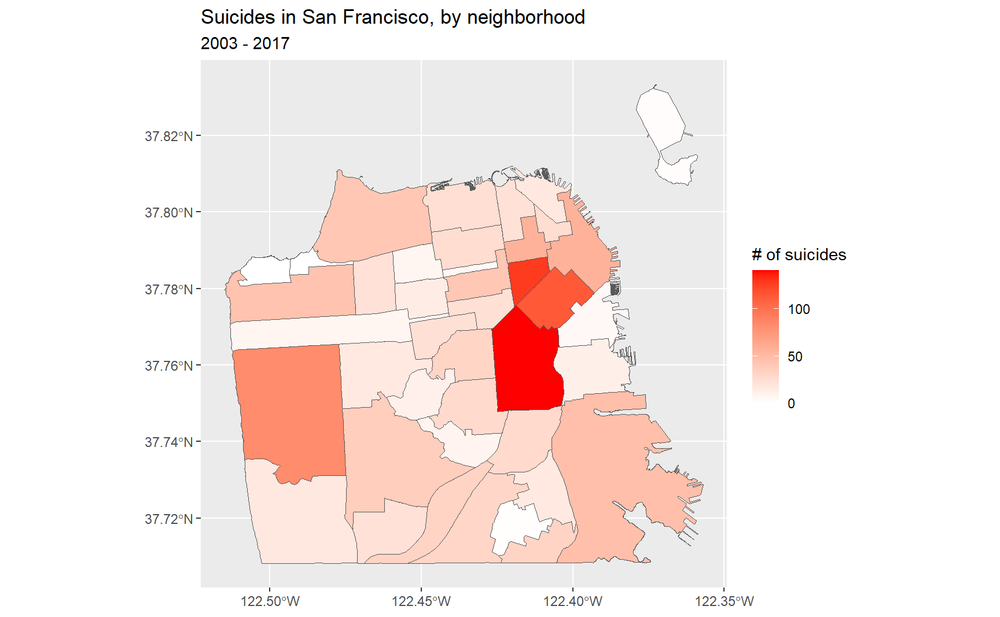

17 Choropleth maps
For this chapter you’ll need the following files, which are available for download here: san_francisco_suicide_2003_2017.csv, san_francisco_neighborhoods.dbf, san_francisco_neighborhoods.prj, san_francisco_neighborhoods.shp, san_francisco_neighborhoods.shx.
In Chapter 16 we made hotspot maps to show which areas in San Francisco had the most suicides. We made the maps in a number of ways and consistently found that suicides were most prevalent in northeast San Francisco. In this chapter we will make choropleth maps, which are shaded maps where each “unit” is some known geographic area, such as a state or neighborhood. Think of election maps where states are colored blue when a Democratic candidate wins that state and red when a Republican candidate wins. These are choropleth maps - each state is colored to indicate something. In this chapter we will continue to work on the suicide data and make choropleth maps shaded by the number of suicides in each neighborhood (we will define this later in the chapter) in the city.
Since we will be working more on the suicide data from San Francisco, let’s read it in now.
library(readr)
suicide <- read_csv("data/san_francisco_suicide_2003_2017.csv")
suicide <- as.data.frame(suicide)The package that we will use to handle geographic data and do most of the work in this chapter is sf. sf is a sophisticated package and does far more than what we will cover in this chapter. For more information about the package’s features please see the website for it here.
install.packages("sf")library(sf)
# Warning: package 'sf' was built under R version 4.2.2
# Linking to GEOS 3.9.3, GDAL 3.5.2, PROJ 8.2.1; sf_use_s2() is TRUEFor this chapter we will need to read in a shapefile that depicts the boundaries of each neighborhood in San Francisco. A shapefile is similar to a data.frame but has information on how to draw a geographic boundary such as a state. The way sf reads in the shapefiles is through the st_read() function. Our input inside the () is a string with the name of the “.shp” file we want to read in (since we are telling R to read a file on the computer rather than an object that exists, it needs to be in quotes). This shapefile contains neighborhoods in San Francisco so we’ll call the object sf_neighborhoods.
I downloaded this data from San Francisco’s Open Data site here, selecting the Shapefile format in the Export tab. If you do so yourself it’ll give you a zip file with multiple files in there. This is normal with shapefiles, you will have multiple files and only read in the file with the “.shp” extension to R. We still do need all of the files, and st_read() is using them even if not explicitly called. So make sure every file downloaded is in the same working directory as the .shp file. The files from this site had hard-to-read file names, so I relabeled them all as “san_francisco_neighborhoods” though that doesn’t matter once it’s read into R.
sf_neighborhoods <- st_read("data/san_francisco_neighborhoods.shp",
quiet = TRUE
)As usual when dealing with a new data set, let’s look at the first 6 rows.
head(sf_neighborhoods)
# Simple feature collection with 6 features and 1 field
# Geometry type: MULTIPOLYGON
# Dimension: XY
# Bounding box: xmin: -122.4543 ymin: 37.70822 xmax: -122.357 ymax: 37.80602
# Geodetic CRS: WGS84(DD)
# nhood geometry
# 1 Bayview Hunters Point MULTIPOLYGON (((-122.3816 3...
# 2 Bernal Heights MULTIPOLYGON (((-122.4036 3...
# 3 Castro/Upper Market MULTIPOLYGON (((-122.4266 3...
# 4 Chinatown MULTIPOLYGON (((-122.4062 3...
# 5 Excelsior MULTIPOLYGON (((-122.424 37...
# 6 Financial District/South Beach MULTIPOLYGON (((-122.3875 3...The last column is important. In shapefiles, the “geometry” column is the one with the instructions to make the map. This data has a single row for each neighborhood in the city. So the “geometry” column in each row has a list of coordinates, which, if connected in order, make up that neighborhood. Since the “geometry” column contains the instructions to map, we can plot() it to show a map of the data.
plot(sf_neighborhoods$geometry)
Here we have a map of San Francisco broken up into neighborhoods. Is this a perfect representation of the neighborhoods in San Francisco? No. It is simply the city’s attempt to create definitions of neighborhoods. Indeed, you’re likely to find that areas at the border of neighborhoods are more similar to each other than they are to areas at the opposite side of their designated neighborhood. You can read a bit about how San Francisco determined the neighborhood boundaries here, but know that this, like all geographic areas that someone has designated, has some degree of inaccuracy and arbitrariness in it. Like many things in criminology, this is just another limitation we will have to keep in mind.
In the head() results there was a section about something called “epsg” and “proj4string.” Let’s talk about that specifically since they are important for working with spatial data.
An issue with working with geographic data is that the Earth is not flat. Since the Earth is spherical, there will always be some distortion when trying to plot the data on a flat surface such as a map. To account for this, we need to transform the longitude and latitude values we have to work properly on a map. We do so by “projecting” our data onto the areas of the Earth we want. This is a complex field with lots of work done on it (both abstractly and for R specifically) so this chapter will be an extremely brief overview of the topic and oversimplify some aspects of it.
If we look at the output of st_crs(sf_neighborhoods) we can see that the EPSG is set to 4326 and the proj4string (which tells us the current map projection) is “+proj=longlat +datum=WGS84 +no_defs”. This CRS, WGS84, is a standard CRS and is the one used whenever you use a GPS to find a location. To find the CRS for certain parts of the world see here. If you search that site for “California,” you’ll see that California is broken into 6 zones. The site isn’t that helpful on which zones are which, but some Googling can often find state or region maps with the zones depicted there. We want California zone 3, which has the EPSG code 2227. We’ll use this code to project this data properly.
If we want to get the proj4string for 2227 we can run st_crs(2227). I’m not running it here because it will print out a large amount of text, but you should run it on your own computer. Note the text in text in this output includes “US survey foot.” This means that the units are in feet. Some projections have units in meters so be mindful of this when doing some analysis, such as seeing if a point is within X feet of a certain area.
Let’s convert our sf_neighborhoods data to coordinate reference system 2227 using st_transform().
sf_neighborhoods <- st_transform(sf_neighborhoods, crs = 2227)
st_crs(sf_neighborhoods)
17.1 Spatial joins
What we want to do with these neighborhoods is to find out which neighborhood each suicide occurred in and sum up the number of suicides per neighborhood. Once we do that, we can make a map at the neighborhood level and be able to measure suicides per neighborhood. A spatial join is very similar to regular joins where we merge two data sets based on common variables (such as state name or unique ID code of a person). In this case it merges based on some shared geographic feature such as if two lines intersect or (as we will do so here) if a point is within some geographic area.
Right now our suicide data is in a data.frame with some info on each suicide and the longitude and latitude of the suicide in separate columns. We want to turn this data.frame into a spatial object to allow us to find which neighborhood each suicide happened in. We can convert it into a spatial object using the st_as_sf() function from sf. Our input is first our data, suicide. Then in the coords parameter we put a vector of the column names so the function knows which columns the longitude and latitude columns are so it can convert those columns to a “geometry” column like we saw in sf_neighborhoods earlier. We’ll set the CRS to be the WGS84 standard we saw earlier, but we will change it to match the CRS that the neighborhood data has.
suicide <- st_as_sf(suicide,
coords = c("X", "Y"),
crs = "+proj=longlat +ellps=WGS84 +no_defs"
)We want our suicides data in the same projection as the neighborhoods data so we need to use st_transform() to change the projection. Since we want the CRS to be the same as in sf_neighborhoods, we can set it using st_crs(sf_neighborhoods) to use the right CRS.
suicide <- st_transform(suicide,
crs = st_crs(sf_neighborhoods)
)Now we can take a look at head() to see if it was projected.
head(suicide)
# Simple feature collection with 6 features and 12 fields
# Geometry type: POINT
# Dimension: XY
# Bounding box: xmin: -122.4893 ymin: 37.72218 xmax: -122.3964 ymax: 37.79414
# Geodetic CRS: WGS84(DD)
# IncidntNum Category Descript DayOfWeek Date Time PdDistrict
# 1 180318931 SUICIDE ATTEMPTED SUICIDE BY STRANGULATION Monday 04/30/2018 06:30:00 TARAVAL
# 2 180315501 SUICIDE ATTEMPTED SUICIDE BY JUMPING Saturday 04/28/2018 17:54:00 NORTHERN
# 3 180295674 SUICIDE SUICIDE BY LACERATION Saturday 04/21/2018 12:20:00 RICHMOND
# 4 180263659 SUICIDE SUICIDE Tuesday 04/10/2018 05:13:00 CENTRAL
# 5 180235523 SUICIDE ATTEMPTED SUICIDE BY INGESTION Friday 03/30/2018 09:15:00 TARAVAL
# 6 180236515 SUICIDE SUICIDE BY ASPHYXIATION Thursday 03/29/2018 17:30:00 RICHMOND
# Resolution Address Location PdId year
# 1 NONE 0 Block of BRUCE AV POINT (-122.45168059935614 37.72218061554315) 1.803189e+13 2018
# 2 NONE 700 Block of HAYES ST POINT (-122.42876060987851 37.77620120112792) 1.803155e+13 2018
# 3 NONE 3700 Block of CLAY ST POINT (-122.45462091999406 37.7881754224736) 1.802957e+13 2018
# 4 NONE 0 Block of DRUMM ST POINT (-122.39642194376758 37.79414474237039) 1.802637e+13 2018
# 5 NONE 0 Block of FAIRFIELD WY POINT (-122.46324153155875 37.72679184368551) 1.802355e+13 2018
# 6 NONE 300 Block of 29TH AV POINT (-122.48929119750689 37.782735835121265) 1.802365e+13 2018
# geometry
# 1 POINT (-122.4517 37.72218)
# 2 POINT (-122.4288 37.7762)
# 3 POINT (-122.4546 37.78818)
# 4 POINT (-122.3964 37.79414)
# 5 POINT (-122.4632 37.72679)
# 6 POINT (-122.4893 37.78274)We can see it is now a “simple feature collection” with the correct projection. And we can see there is a new column called “geometry” just like in sf_neighborhoods. The type of data in “geometry” is POINT since our data is just a single location instead of a polygon like in the neighborhoods data.
Since we have both the neighborhoods and the suicides data let’s make a quick map to see the data.
plot(sf_neighborhoods$geometry)
plot(suicide$geometry, add = TRUE, col = "red")
Our next step is to combine these two data sets to figure out how many suicides occurred in each neighborhood. This will be a multi-step process so let’s plan it out before beginning. Our suicide data is one row for each suicide; our neighborhood data is one row for each neighborhood. Since our goal is to map at the neighborhood-level we need to get the neighborhood where each suicide occurred then aggregate up to the neighborhood-level to get a count of the suicides-per-neighborhood. Then we need to combine that with the original neighborhood data, and we can map it.
- Find which neighborhood each suicide happened in
- Aggregate suicide data until we get one row per neighborhood and a column showing the number of suicides in that neighborhood
- Combine with the neighborhood data
- Make a map
We’ll start by finding the neighborhood where each suicide occurred using the function st_join(), which is a function in sf. This does a spatial join and finds the polygon (neighborhood in our case) where each point is located in. Since we will be aggregating the data, let’s call the output of this function suicide_agg. The order in the () is important! For our aggregation we want the output to be at the suicide-level so we start with the suicide data. In the next step we’ll see why this matters.
suicide_agg <- st_join(suicide, sf_neighborhoods)Let’s look at the first 6 rows.
head(suicide_agg)
# Simple feature collection with 6 features and 13 fields
# Geometry type: POINT
# Dimension: XY
# Bounding box: xmin: -122.4893 ymin: 37.72218 xmax: -122.3964 ymax: 37.79414
# Geodetic CRS: WGS84(DD)
# IncidntNum Category Descript DayOfWeek Date Time PdDistrict
# 1 180318931 SUICIDE ATTEMPTED SUICIDE BY STRANGULATION Monday 04/30/2018 06:30:00 TARAVAL
# 2 180315501 SUICIDE ATTEMPTED SUICIDE BY JUMPING Saturday 04/28/2018 17:54:00 NORTHERN
# 3 180295674 SUICIDE SUICIDE BY LACERATION Saturday 04/21/2018 12:20:00 RICHMOND
# 4 180263659 SUICIDE SUICIDE Tuesday 04/10/2018 05:13:00 CENTRAL
# 5 180235523 SUICIDE ATTEMPTED SUICIDE BY INGESTION Friday 03/30/2018 09:15:00 TARAVAL
# 6 180236515 SUICIDE SUICIDE BY ASPHYXIATION Thursday 03/29/2018 17:30:00 RICHMOND
# Resolution Address Location PdId year
# 1 NONE 0 Block of BRUCE AV POINT (-122.45168059935614 37.72218061554315) 1.803189e+13 2018
# 2 NONE 700 Block of HAYES ST POINT (-122.42876060987851 37.77620120112792) 1.803155e+13 2018
# 3 NONE 3700 Block of CLAY ST POINT (-122.45462091999406 37.7881754224736) 1.802957e+13 2018
# 4 NONE 0 Block of DRUMM ST POINT (-122.39642194376758 37.79414474237039) 1.802637e+13 2018
# 5 NONE 0 Block of FAIRFIELD WY POINT (-122.46324153155875 37.72679184368551) 1.802355e+13 2018
# 6 NONE 300 Block of 29TH AV POINT (-122.48929119750689 37.782735835121265) 1.802365e+13 2018
# nhood geometry
# 1 Oceanview/Merced/Ingleside POINT (-122.4517 37.72218)
# 2 Hayes Valley POINT (-122.4288 37.7762)
# 3 Presidio Heights POINT (-122.4546 37.78818)
# 4 Financial District/South Beach POINT (-122.3964 37.79414)
# 5 West of Twin Peaks POINT (-122.4632 37.72679)
# 6 Outer Richmond POINT (-122.4893 37.78274)There is now the nhood column from the neighborhoods data, which says which neighborhood the suicide happened in. Now we can aggregate up to the neighborhood-level using group_by() and summarize() functions from the dplyr package.
We actually don’t have a variable with the number of suicides so we need to make that. We can simply call it number_suicides and give it the value of 1 since each row is only one suicide.
suicide_agg$number_suicides <- 1Now we can aggregate the data and assign the results back into suicide_agg.
library(dplyr)
suicide_agg <- suicide_agg %>%
group_by(nhood) %>%
summarize(number_suicides = sum(number_suicides))Let’s check a summary of the number_suicides variable we made.
summary(suicide_agg$number_suicides)
# Min. 1st Qu. Median Mean 3rd Qu. Max.
# 1.00 13.50 23.50 32.30 37.25 141.00The minimum is one suicide per neighborhood, 32 on average, and 141 in the neighborhood with the most suicides. So what do we make of this data? Well, there are some data issues that cause problems in these results. Let’s think about the minimum value. Did every single neighborhood in the city have at least one suicide? No. Take a look at the number of rows in this data, keeping in mind there should be one row per neighborhood.
nrow(suicide_agg)
# [1] 40And let’s compare it to the sf_neighborhoods data.
nrow(sf_neighborhoods)
# [1] 41The suicides data is missing 2 neighborhoods (one of the 40 values is missing and is NA, not a real neighborhood). That is because if no suicides occurred there, there would never be a matching row in the data so that neighborhood wouldn’t appear in the suicide data. That’s not going to be a major issue here but is something to keep in mind if this were a real research project.
The data is ready to merge with the sf_neighborhoods data. We’ll introduce a new function that makes merging data simple. This function also comes from the dplyr package.
The function we will use is left_join(), which takes two parameters, the two data sets to join together.
left_join(data1, data2)
This function joins these data and keeps all of the rows from the left data and every column from both data sets. It combines the data based on any matching columns (matching meaning same column name) in both data sets. Since in our data sets, the column nhood exists in both, it will merge the data based on that column.
There are two other functions that are similar but differ based on which rows they keep.
left_join()- All rows from Left data and all columns from Left and Right dataright_join()- All rows from Right data and all columns from Left and Right datafull_join()- All rows and all columns from Left and Right data
We could alternatively use the merge() function, which is built into R, but that function is slower than the dplyr functions and requires us to manually set the matching columns.
We want to keep all rows in sf_neighborhoods (keep all neighborhoods) so we can use left_join(sf_neighborhoods, suicide_agg). Let’s assign the results to a new data set called sf_neighborhoods_suicide.
We don’t need the spatial data for “suicide_agg” anymore, and it will cause problems with our join if we keep it, so let’s delete the “geometry” column from that data. We can do this by assigning the column the value of NULL.
suicide_agg$geometry <- NULLNow we can do our join.
sf_neighborhoods_suicide <- left_join(sf_neighborhoods, suicide_agg)
# Joining, by = "nhood"If we look at summary() again for number_suicides we can see that there are now two rows with NAs. These are the neighborhoods where there were no suicides so they weren’t present in the suicide_agg data.
summary(sf_neighborhoods_suicide$number_suicides)
# Min. 1st Qu. Median Mean 3rd Qu. Max. NA's
# 1.00 15.00 24.00 33.08 38.50 141.00 2We need to convert these values to 0. We will use the is.na() function to conditionally find all rows with an NA value in the number_suicides column and use square bracket notation to change the value to 0.
sf_neighborhoods_suicide$number_suicides[
is.na(sf_neighborhoods_suicide$number_suicides)
] <- 0Checking it again we see that the minimum is now 0 and the mean number of suicides decreases a bit to about 31.5 per neighborhood.
summary(sf_neighborhoods_suicide$number_suicides)
# Min. 1st Qu. Median Mean 3rd Qu. Max.
# 0.00 12.00 23.00 31.46 36.00 141.0017.2 Making choropleth maps
Finally we are ready to make some choropleth maps.
For these maps we are going to use ggplot2 again so we need to load it.
library(ggplot2)ggplot2’s benefit is you can slowly build graphs or maps and improve the graph at every step. Earlier, we used functions such as geom_line() for line graphs and geom_point() for scatter plots. For mapping these polygons we will use geom_sf(), which knows how to handle spatial data.
As usual we will start with ggplot(), inputting our data first. Then inside of aes (the aesthetics of the graph/map) we use a new parameter fill. In fill we will put in the number_suicides column, and it will color the polygons (neighborhoods) based on values in that column. Then we can add the geom_sf().
ggplot(sf_neighborhoods_suicide, aes(fill = number_suicides)) +
geom_sf()
We have now created a choropleth map showing the number of suicides per neighborhood in San Francisco! Based on the legend, neighborhoods that are light blue have the most suicides while neighborhoods that are dark blue have the fewest (or none at all). Normally we’d want the opposite, with darker areas signifying a greater amount of whatever the map is showing.
We can use scale_fill_gradient() to set the colors to what we want. We input a color for low value and a color for high value, and it’ll make the map shade by those colors.
ggplot(
sf_neighborhoods_suicide,
aes(fill = number_suicides)
) +
geom_sf() +
scale_fill_gradient(
low = "white",
high = "red"
)
This gives a much better map and clearly shows the areas where suicides are most common and where there were no suicides.
To make this map easier to read and look better, let’s add a title to the map and to the legend.
ggplot(
sf_neighborhoods_suicide,
aes(fill = number_suicides)
) +
geom_sf() +
scale_fill_gradient(
low = "white",
high = "red"
) +
labs(
fill = "# of suicides",
title = "Suicides in San Francisco, by neighborhood",
subtitle = "2003 - 2017"
)
Since the coordinates don’t add anything to the map, let’s get rid of them.
ggplot(
sf_neighborhoods_suicide,
aes(fill = number_suicides)
) +
geom_sf() +
scale_fill_gradient(
low = "white",
high = "red"
) +
labs(
fill = "# of suicides",
title = "Suicides in San Francisco, by neighborhood",
subtitle = "2003 - 2017"
) +
theme(
axis.text.x = element_blank(),
axis.text.y = element_blank(),
axis.ticks = element_blank()
)
So what should we take away from this map? There are more suicides in the downtown area than any other place in the city. Does this mean that people are more likely to kill themselves there than elsewhere? Not necessarily. A major mistake people make when making a choropleth map (or really any type of map) is accidentally making a population map. The darker shaded parts of our map are also where a lot of people live. So if there are more people, it is reasonable that there would be more suicides (or crimes, etc.). What we’d really want to do is make a rate per some population (usually per 100k though this assumes equal risk for every person in the city which isn’t really correct) to control for population differences.
We’ll use this data in Chapter 18 to make interactive choropleth maps so let’s save it.
save(sf_neighborhoods_suicide, file = "data/sf_neighborhoods_suicide.rda")